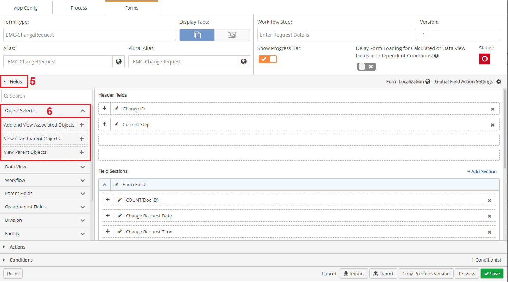
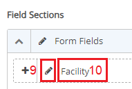
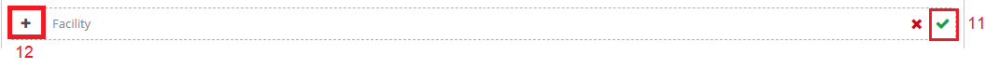
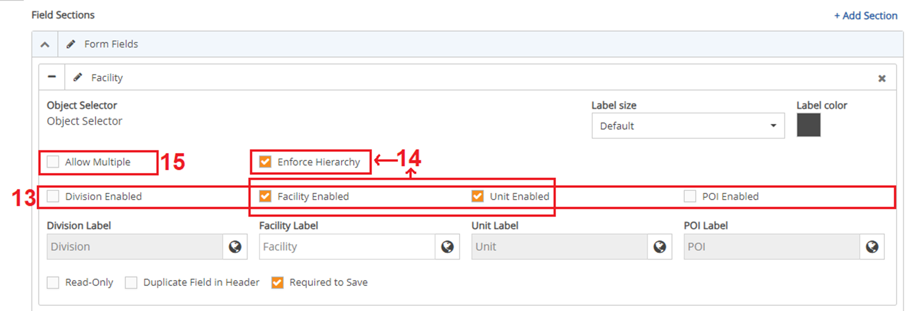

Adding Object Selectors allows users to assign a workflow to a System Model Object.
To add an Object Selector
From the main menu dropdown, select Designer to open Forms Designer.
Click the Forms tab.
Click the Form Type dropdown textbox and select a child workflow type.
Clickthe Workflow Step dropdown textbox and select a workflow step where forms are present.
Click the Fields ribbon. The Field ribbon will expand with a menu of Field types below it, and two sections display to the right, Header Fields, and Field Sections.
Click the Object Selector ribbon. The Object Selector menu expands.

Click an Object Selector. The Object Selector is added to the bottom of the Field Sections.
Click and drag where you want to place the Object Selector field in the Field Sections.
To update the name of the Object Selector, click the Editicon to the right of the Object Selector name.

Type in the name you want the Object Selector to display.
Click the check mark to the right of the Object Selector name textbox.

To edit the location level search results for the object selector, Click the plus icon. The Object Selector window expands.

Select whether you want to Object Selector to populate results that are either at the Division level, Facility level, Unit level, or POI level.
When multiple Objects are selected, select the Enforce Hierarchy checkbox so that objects of varying levels can be organized and filtered by the higher object level.
When Allow Multiple is selected, end users on the form can select more than one object in the Object Selector dropdown textbox. This can be used when more than one object is to be inspected.